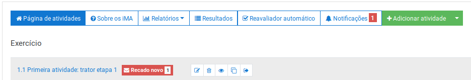
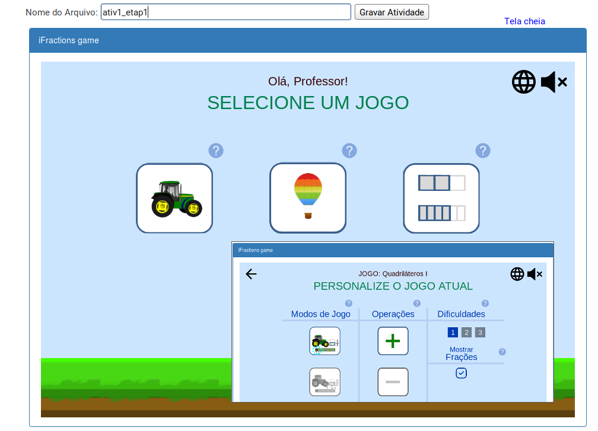
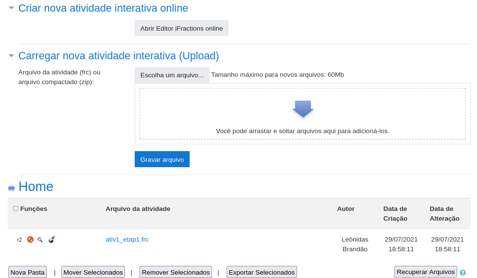

Preparando uma atividade com o iFractions (Professor)
Se você é um professor, siga o seguinte tutorial para criar uma atividade interativa do iFractions dentro do Moodle.
1. Clicar no botão verde escrito Adicionar atividade com na figura abaixo:

2. Na página aberta:
- Selecionar tipo de atividade: Exercício;
- Digitar o título da atividade (não deve coincidir com títulos anteriores);
- Digitar o enunciado que o aluno receberá (em atividade iFractions cada tipo de jogo pode ter o mesmo enunciado);
- Selecionar o tipo iMA: iFractions (0.1.20200221)
-
Selecionar o arquivo de atividade (via editor em linha ou arquivo previamente gravado) — veja seção 3 para
mais detalhes desse passo;

- Configurar o prazo da atividade;
- Clicar no botão para registrar a atividade: Salvar mudanças.
3. Selecionar arquivo ou construir uma atividade com editor iMA em linha:
- No passo 2.5, deve-se clicar no botão Escolha o arquivo...;
- Na página aberta, clicar no botão Abrir Editor iFractions online;
-
Na página aberta, digitar um nome de arquivo (e.g.
ativ1_etap1) e selecionar jogo (trator/quadrilátero I), modo de jogo, operação e dificuldade; - Clicar no botão Gravar Atividade.
- Aparecerá uma janela com a informação "Atividade interativa gravada com sucesso sob o nome: ativ1_etap1.frc", devendo-se clicar no botão OK Aquela janela é fechada, retornando-se à tela aberta em 3.2, em sua parte inferior estão todas as atividades registradas, a última criada em destaque.
-
Deve-se selecionar o arquivo a ser utilizado para a atividade (e.g. ativ1_etap1.frc);

4. Completar registro da atividade:
- Após selecionar o arquivo em 3.5, aquela janela é fechada retornando-se a janela principal, agora basta clicar no botão Salvar mudanças.